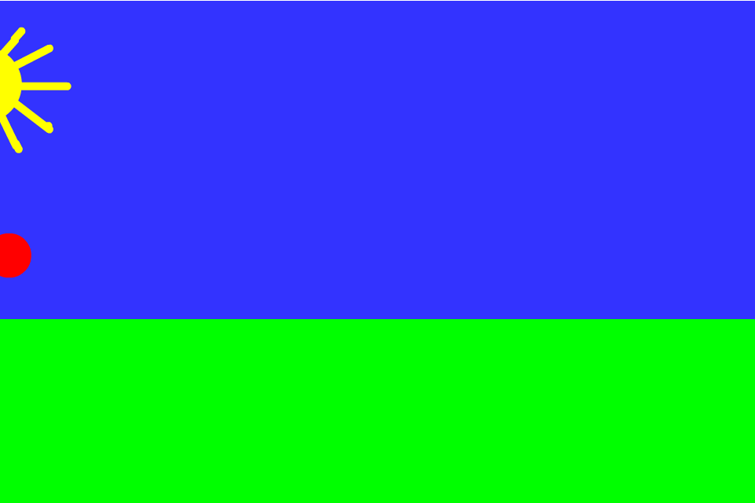

Her ses en animeret illustration af maleriet "Stjernenatten" af Van Gogh. Jeg har brugt programmerne Adobe Photoshop og Animate til at animere dette billede så månen bevæger sig henover skærmen. Jeg syntes at processen i at bringe et dødt objekt til live igennem animation er en interresant process der kan bringe ny opmærksomhed til ting som ellers vil blive set som trivielle eller kedelige.

Denne animation er lavet i programmet Adobe Animate. Dette var en af de første animationer jeg lavede på mit studie og jeg syntes processen var meget lærerig og kan se mig selv arbejde mere med Animate i fremtiden da det er et program med mange forskellige muligheder.

Dette billede er et forsøg på at lave et såkaldt Low-key billede af mig selv det er blevet skabt i et lokale hvor jeg havde fuld kontrol over lyset og kunne derfor opnå den ønskede effekt med at det kun er den ene side af mit ansigt der bliver lyst optgroup det give en form for dyster stemning hvilket også var målet med mit billede da jeg søgte noget udover et sædvanligt portrætfoto. det eneste jeg har redigeret ved dette billede er at jeg har lagt et sort/hvid filter over det hvilket er blevet gjort i lightroom.

Dette billede er det samme som før bortset fra at det er en version der er blevet redigeret i Photoshop jeg er med på at man på mindre devices muligvis ikke kan se de ændringer der da det ikke er markante ændringer, dette var mere et forsøg på at gøre billedet så pænt som muligt derfor er det der primært er rettet i det små skønhedsfejl som uren hud og lignende. Det var meget interresant at dykke ned i Photoshop og se de mange forskellige ting programmet kan benyttes til.

Jeg har som oftest den samme tankegang/forberedelse til de projekter eller opgaver jeg går ind til.